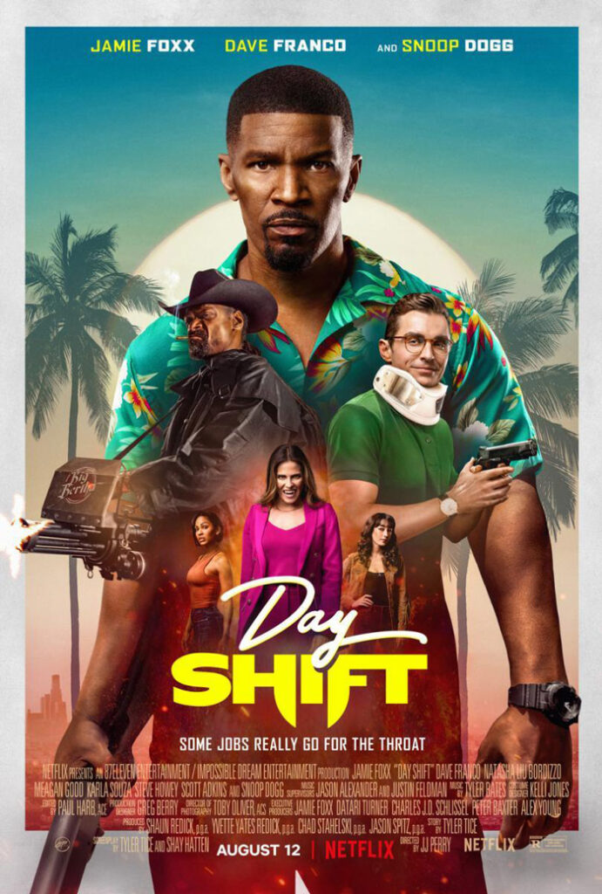

Top 5 de Películas más vistas en Netflix Costa Rica
En su graduación universitaria, la vida de Natalie se divide en dos realidades paralelas tras realizar una prueba de embarazo. ¿Qué le deparará el futuro?.
Los enemigos se unen cuando los cerdos le proponen una tregua a las aves para unirse contra un nuevo y terrible rival que los amenaza a todos.
Un cazavampiros de Los Ángeles tiene una semana para conseguir el dinero de la escuela y el tratamiento dental de su hija. Ganarse la vida en estos días podría matarlo.

Una aspirante a cantante acepta casarse por conveniencia con un infante de la Marina. Pero una tragedia transforma su relación falsa en una muy verdadera.
Tras el asesinato de su jijo durante un control de tránsito, un juez pone en la mira a policías corruptos y se alía con otro padre para conseguir justicia.
Top 5 Series más vistas en Netflix Costa Rica
Pasión de Gavilanes
Emotivo, Romántico. 2022, 16+, 2 temporadas.
Woo una abogada extraordinaria
Inspirador. 2022, 16+, 16 episodios.
Manifiesto
Surrealista, De suspenso. 2021, 13+, 3 temporadas.